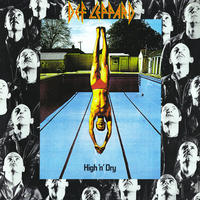
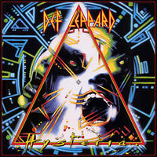

Def Leppard are a heavy metal band who are similar to Nickleback, Foo Fighters and Shine Down in todays music. They have 9 studio made albums and have a handful of live albums also.Below are 4 of their albums and a little bit about them.
High N Dry
is Def Leppard's second album. This was the album that put Def Leppard on the music scene.It was released in 1981.The song that was the real stand out of this album was the title of the album. It was huge it made it to #33 on VH1's 40 Greatest Metal Songs. The song list and a little more about album can be viewed on the 2 following links. click here for wikipedia or click here for Def Leppard page on their album or To see a review of this Def Leppard album please click here. review To view a song from the album Click here to listen to "Bringin' on the heartache" another of def Leppard's big songs.
.jpg)
Pyromania
is their third album they released in 1983. The list of songs on the album are on the following link.Def Leppard album page The song "Photograph" made it to a video game "Guitar Hero III" which many of you have probably played. The album cover was not liked by all as many music store didn't have that album due to the violence of the cover. The album made it to 384 out of 500 for Rolling stones magazine greatest album of all time.To learn more about this album click on the following link click here for wikipedia above is a link for the Def Leppard album page.To view a album review click on the link to see it. link This is a song that they are well known for click here to watch
